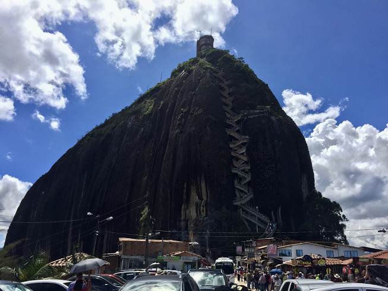

The Boaths
Do
Galápagos
Quito (ECU) | Galápagos Islands (ECU) | Cartegena (COL) | Medellín (COL)
¡Hola, Quito!
Quito, the capital city of Ecuador, lies at an elevation of 9,350 ft (2,850 metres), making it the second-highest capital in the world. Quito is also the world's only capital to be directly menaced by an active volcano (Pichincha).

 2 nights at the Patio Andaluz Hotel
2 nights at the Patio Andaluz Hotel
Quito
A guided walking tour through the colonial streets of Quito began at Independence Plaza, followed by seeing the changing of the guards at the Government Palace. Next, we visited the gold-adorned La Compañia Church, deep in Christmas-time celebration. We snapped some great pics of colonial and modern Quito from Panecillo Overlook. After an empañada lunch, we drove a short ways to "Middle Earth" -- the Equator -- where we performed several experiments unique to 0 degrees latitude, such as balancing an egg atop a nail... I can't remember if Zoe got it to stay... what do you think?


¡Vamos a los Galápagos!
An indirect flight brought us 1000km off the coast of Ecuador, to the Galápagos Islands. An archipelago of volcanic islands splitting the Equator, the islands are best known for their vast number of endemic species, which were studied by Charles Darwin during his voyage of the HMS Beagle and contributed to his inception of the theory of evolution by means of natural selection.
We boarded the only home we would know for the next 6 days; complete with seafood buffets, animal towel folds, contraband cocktails at sunset in the Jacuzzi... a haven of entitled luxury amidst a remote, desolate, boobie-shit-encrusted atoll.
She was called The Petrel.
Akin to its namesake (a seabird), the ship was elegant, swift and silent at sea.
Or at least, that's what the itinerary would have you believe...Charting New Waters
Yachting Tour Route
Day 1
Balta Island & North Seymour Island
Within minutes of departing our plane on Balta Island, we saw our first seal, which we would never quite learn how to pronounce correctly ("sea lion"). Waiting for us to finish our selfies with the vagabond creature passed out on the bench, our naturalist guide shook her head and sighed with the wisdom of someone with decades of experience having her seat taken by one. We could not even imagine our own naïveté.
A short sail north landed us on the rocky coast of nearby North Seymour Island. A lovely afternoon consisted of visually hunting colonies of frigatebirds, blue-footed boobies, land-iguanas, and playing dead in the face of attacking baby sealions.
Rocky Seas...
Our first night at sea, crossing the Equator (apparently a big deal if by boat), around the head of the "seahorse" of Isabela Island.
Sailing the open waters of the Pacific, the catamaran rocked so much it felt it could tip over (as the Christmas tree could attest).
A rough night, with little sleep (despite no lack of scotch)... Nevertheless, rather onboard than with the fishes!
Day 2 Morning
Vicente Roca Point, Tagus Cove, Isabela Island
Perhaps as a result of the rocky night, a Day-2 Dad Meltdown was accurately predicted (Vegas 2:1 odds), despite his best attempts to have a pleasant, relaxing Birthday.
Morning allowed a wildlife safari from dingies, where we saw Fur Seals, Blue Whales breaching, and a Mola Mola (moon fish). This was followed by snorkeling, then back on-deck for a seafood bbq, birthday beers, and naps.
Day 2 Afternoon
Espinosa Point, Fernandina Island
A 2-hr cruise down to Fernandina Island provided an opportunity for a long walk across ʻaʻā lava, where we witnessed crabs, a whale skeleton, a boisterous bull sea lion ousted by a young buck, and IGUANA HELL!

Day 3
Tagus Cove, Urbina Bay
An inland hike around Tagus Cove (long a stopping grounds for pirates and thirsty seafarers) was followed by a raft safari to see our first penguins!
We snorkeled with cormorants, sea lions, and penguins in a beautiful reef. But don't let these tropical islands fool you... if you're swimming with penguins, the water's not likely to be warm!
A long dip in the hot-tub afterwards was appreciated by all.
During an afternoon hike of Urbina Bay, we discovered the business end of a tortoise, and tried out an all-natural hair gel (not what you think!)
At night, the staff served a festive Christmas dinner, and joined us in celebrations.
12/24/2017Day 4
Elizabeth Bay & Moreno Point
A morning rafting trip through a peaceful mangrove was perfect for spotting golden rays and eagle rays, sea turtles (some mating), pelicans, and the elusive tree lion!
In the afternoon, a long walk across a pahoehoe lava field allowed us to imagine how life began to colonize these barren islands many eons ago.
On the way back to the ship, we came across a rock outcrop that had just about every Galapagan animal you could ever shake a stick at (but not really, because that's illegal).
 12/25/2017
12/25/2017
Day ..?
Somewhere in the Pacific Ocean
Our wayward vessel drifts onward.. no sign of intelligent life... beating hot sun... 3rd day of octopus and rice... wondering if our fate shall follow that of the dodo... sea lions haunt our thoughts, even while rest is attempted on an unremittingly rocking ship. It's all enough to make you sick.. in fact, it did, for Max, who spent the day losing his lunch in a random island village, fighting pesky sealions for public benches, while the rest of the family visited a tortoise center.

A hike also brought us to Sierra Negra Volcano, the largest caldera of all the Isabela volcanos.
Galapa-going home!
The sea-lion-infested Puerto Villamil was enough to make us want to give up island life and head back to civilization.
Quito, Again
1 night layover at an enchanted hotel in Quito.
A sad farewell to the homeward-bound parents, but not without some sentimental departing gifts!
1 night at the Casa d'Campo Boutique Hotel Tababela 12/27/2017A la Colombia!!
Quito Cartegena
Cartegena
(Sans parental supervision)
Heatstroke by day, "hydrating" by night, beer-&-laundry, and long romantic evening walks with a gentleman escort to the only person in the city with the spare keys to our self-locked-out apartment.


New Years Eve!
Street meat, road sodas, declined ski trips, and fireworks to bring in 2018.
Max Fly to Medellin
(Alex, P, & ZoBo HOME!)
And then there was one...The (arguably) least-entrusted member of the original traveling party was left alone, unrestrained, for an additional 4 days in a developing Latin American Country...
Medellín
Directing taxi drivers with broken (and irreparable) Español... a private city tour... and a rainforest hike with locals to a nearby waterfall.

 01/02/2018
01/02/2018
Guatapé
A 3 hour drive (each way) to some rock in the middle of nowhere, that then took 2 hours to climb 20 flights of stairs to the top because of holiday tourists.
值不值? Probably 值得.
 01/03/2018
01/03/2018